Deutsch
Deutsch Català
Català English
English Español
Español Français
Français Italiano
Italiano Magyar
Magyar Polski
Polski Português
Português Português (Brazil)
Português (Brazil) Română
Română Slovenčina
Slovenčina Suomi
Suomi Svenska
Svenska 中文 ［中文］
中文 ［中文］ Русский
Русский Українська
Українська 日本語
日本語| Index |
|
Datenträger einhängen Navigieren Aussehen Tracker Einstellungen Mit Dateien arbeiten Infos zu Dateioperationen |
Tracker
Der Tracker ist die graphische Oberfläche für den Umgang mit Dateien. Alle Dateioperationen (Dateien und Ordner anlegen oder löschen, kopieren, verschieben, oder ausführen) können hier vorgenommen werden.
Der Tracker ist eine Anwendung, wie jede andere (die Arbeitsfläche mit all ihren Icons is tatsächlich auch nur ein Fenster im Vollbild-Modus im Hintergrund). Deshalb wird er auch in der Deskbar mit allen geöffneten Fenstern gelistet und kann beendet und neu gestartet werden. Sollte der Tracker (oder auch die Deskbar) einmal einfrieren kann er am leichtesten über den Teammonitor reaktiviert werden.
 Einhängen von Datenträgern
Einhängen von Datenträgern
Um einen Datenträger (sei es eine Festplatte oder Partition, eine CD oder USB-Stick) unter Haiku verwenden zu können, muss dieser erst in das System eingebunden werden. Über einen Rechtsklick auf den Arbeitsplatz oder einem bereits eingebundenen Datenträger kann der Menüpunkt aufgerufen werden. Dieser Punkt findet sich auch in der Deskbar.
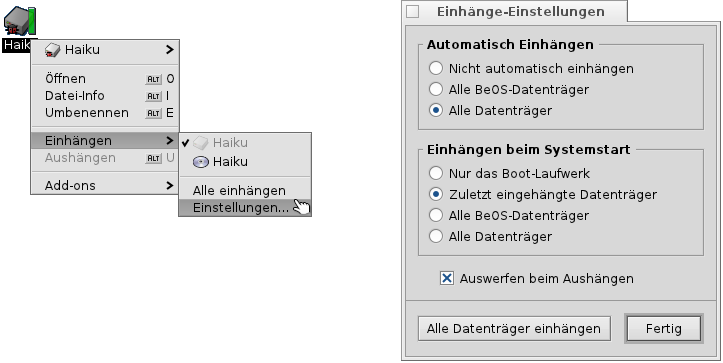Es können vorgenommen werden, ob und welche Datenträger bei einem Systemstart eingebunden werden
Im obigen Bild beispielsweise werden automatisch alle Datenträger eingebunden, die während dem Betrieb hinzugefügt werden (beispielsweise eine CD oder ein USB-Stick) und während dem Systemstart nur die Datenträger, die beim letzten Mal eingebunden waren.
Navigieren
Standardmäßig wird beim Doppelklick auf einen Ordner ein neues, weiteres, Tracker-Fenster geöffnet. Das führt schnell zu einem übervollen Arbeitsplatz.
Wenn beim Doppelklick auf den Ordner OPT gedrückt wird, schließt sich automatisch das übergeordnete Fenster.
Dies gilt auch bei der Navigation über die Tastatur. Mehr hierzu unter Tastaturkürzel und Tastenkombinationen.
Die Ordner-Navigation ist eine der Hauptaufgaben des Tracker. Im Gegensatz zu Datei-Managern anderer Betriebssysteme hat man im Tracker einige einzigartige Funktionen, die das Navigieren effizienter gestalten.
Navigation über Untermenüs
Anstatt jeden Unterordner über einen Doppelklick aufrufen zu müssen, kann man im Tracker sehr einfach durch die Ordnerstruktur navigieren:
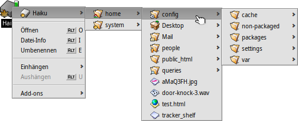Wird ein Ordner, oder ein Datenträger mit der rechten Maustaste angeklickt, so ist der erste Eintrag im Kontextmenü dieser Ordner, beziehungsweise Datenträger selbst. Man kann nun sehr einfach über das aufklappende Untermenü in der Ordnerstruktur bis zum Zielverzeichnis, respektive der gewünschten Datei navigieren und über einen Klick öffnen. Das obige Bild zeigt beispielsweise den Inhalt des Ordners /boot/home/config/.
Wenn man bei dieser Art der Navigation zusätzlich noch einen Datei zieht, wird sie an den Ort verschoben (innerhalb des gleichen Datenträgers) oder kopiert (auf einen anderen Datenträger) über dem man sie los lässt.
Eine ähnliche Navigationsmethode steht in jedem Tracker-Fenster zur Verfügung:
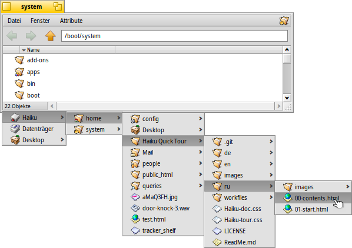Ein Klick auf den linken unteren Bereich - dort wo die Anzahl der angezeigten Einträge steht - öffnet ein Menü, dass alle übergeordneten Ordner bis zur obersten Ebene (dem Arbeitsplatz) enthält, was ein Navigieren zum gewünschten Zielordner möglich macht.
Als Hinweis: der Arbeitsplatz (Desktop) ist immer die höchste Ebene in der Ordnerstruktur, da im Tracker dort die eingebundenen Datenträger angezeigt werden. Wenn man - über diese Art der Navigation - auf einen anderen Datenträger wechseln möchte, muss man zum Arbeitsplatz, um dort alle eingebundenen Laufwerke angezeigt zu bekommen.
Die gleiche Möglichkeit der Navigation über Untermenüs erhält man auch, wenn man eine Datei über einen Ordner zieht und einen kurzen Moment verweilt. Es klappt dann ein Untermenü auf, in dem man sich bis zum gewünschten Ordner vorarbeiten kann, um die Datei dorthin zu verschieben. Wenn die Datei mit der rechten Maustaste gezogen wurde, dann öffnet sich nach dem Loslassen ein Auswahlmenü zum Kopieren, Verschieben oder Verweis erstellen der Datei.
Einfach losschreiben, um zu Dateien zu springen
Das Konzept dürfte bereits von anderen Betriebssystemen her bekannt sein: durch Eintippen der ersten Buchstaben springt die Markierung zu der ersten Datei, die dem eingegebenen Text entspricht. In Haiku wurde dieses Konzept noch einen Schritt weiter entwickelt. Falls keine Datei mit den eingegebenen Buchstaben beginnt, wird die Datei markiert, die die Buchstabenreihe in ihrem Namen enthält; sollte dies auch nicht der Fall sein, so werden noch sämtliche Attribute der Dateien nach dieser Buchstabenreihe durchsucht. Zusätzlich wird noch der eingegebene Text unten links im Tracker-Fenster angezeigt. Wenn hier wieder auf die Anzahl-Anzeige umgeschaltet ist, kann eine neue Suche vorgenommen werden.
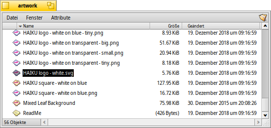Im obigen Beispiel wäre ein reine Suche nach den ersten Buchstaben eines Dateinamens nicht sinnvoll, da sehr viele Dateien mit "Haiku logo" beginnen. Unter Haiku jedoch wird nach Eingabe von "web" sofort zum ersten Vorkommen in der Datei " Haiku logo - website" gesprungen.
Nach Dateien filtern
Anstatt zu den Dateien zu springen während man lostippt, gibt es auch noch die Möglichkeit alle Dateien rauszufiltern, die die eingegebene Zeichenfolge nicht enthalten. Dadurch werden gerade Verzeichnisse mit Unmengen an Dateien auf einmal sehr übersichtlich. Mittels SHIFT LEERTASTE als Trenner lassen sich sogar mehrere Zeichenketten als Filter anwenden.
Im Gegensatz zum Dateien-anspringen bleibt der Filter aktiv, bis ESC gedrückt wird oder das Fenster geschlossen wird (bzw. bei der Nutzung von Single Window Navigation, der Ordner gewechselt wird.)
Dieses "type-ahead" filtern wird in den Tracker Einstellungen aktiviert.
Aussehen
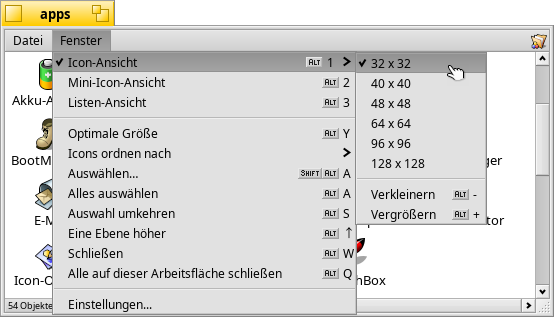
Im Menü können drei verschiedene Ansichten für das Tracker-Fenster eingestellt werden:
(ALT 1) - Große Icons; die Größe kann im dazugehörigen Untermenü oder über die Tastenkombination ALT +/- eingestellt werden.
(ALT 2) - Kleine Icons.
(ALT 3) - Eine detaillierte Liste der Dateien; hier ist es möglich die unterschiedlichen Attribute zu den Dateien anzeigen zu lassen. (Mehr dazu im Abschnitt Attribute.)
Das -Menü hat noch weitere Einträge:
(ALT Y) - Ändert die Fenstergröße auf einen sinnvollen Wert.
- Nur in der Icon- und Mini-Icon Ansicht nutzbar, gestattet es über ein Untermenü die Icons nach diversen Eigenschaften zu sortieren:
, , , , , , ,
- Kehrt die Sortierreihenfolge um.
(ALT K) - Die Icons werden an einem unsichtbaren Raster ausgerichtet; bei zusätzlichem Drücken von SHIFT ändert sich der Menüpunkt zu und die Icons werden zusätzlich noch nach oben gewähltem Kriterium sortiert.
(SHIFT ALT A) - Wählt Dateien anhand eines Regulären Ausdrucks aus.
(ALT W) - Schließt das Tracker-Fenster; bei zusätzlichem Drücken von SHIFT ändert sich der Menüpunkt zu und alle Tracker-Fenster auf allen Arbeitsflächen werden geschlossen.
(ALT Q) - Schließt alle Tracker-Fenster auf der aktuellen Arbeitsfläche; hilfreich, wenn man die Taste OPT nicht drückte, als man durch die Verzeichnisse navigierte und nun der gesamte Arbeitsplatz voll von Tracker-Fenstern ist.
Wenn man nicht alle Icons mittels (ALT K) neu ausrichten möchte, sondern nur einige, dann kann man diese markieren und sie beigedrückter ALT-Taste verschieben. Sie werden dann am Raster ausgerichtet.
Die restlichen Unterpunkte sind hinreichend selbsterklärend. Genauer soll jedoch auf den Punkt "Einstellungen" eingegangen werden:
Tracker Einstellungen
Über wird ein Fenster geöffnet, dessen zahlreiche Einstellungen sich stellenweise nicht sofort erschließen. Da jedoch alle Einstellungen direkt angewendet werden, kann man die Änderungen sofort erkennen.
Hier eine kurze Erklärung zu den nicht ganz offensichtlichen Einstellungen:
- Hier kann ausgewählt werden, ob jedes eingebundene Laufwerk für sich am Arbeitsplatz angezeigt wird, oder alle zusammen in einem Tracker-Fenster, das mit dem Icon "Datenträger" repräsentiert wird.
- Wird aktiviert, öffnet sich ein doppelgeklickter Ordner nicht in einem neuen Fenster, sondern der Inhalt wird stattdessen im selben Fenster dargestellt. Diese Einstellung unterscheidet sich zu der oben erwähnten Möglichkeit, einen Ordner bei gedrückter OPT-Taste zu öffnen, da hier die individuellen Einstellungen zu Anzeige und Position des Fensters verloren gehen.
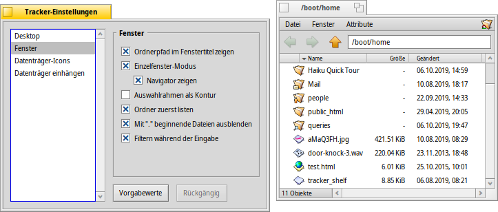Auch wenn sich die Ein-Fenster-Navigation vielleicht vertrauter anfühlt, sollte man der ursprünglichen Navigation von Haiku eine Chance geben, da es durchaus sein kann, dass man hiermit schneller navigiert wenn man sich erstmal daran gewöhnt hat. Andererseits bietet nur diese Einstellung die Möglichkeit, einen Navigator einzublenden, in dem man per Symbol "vor" und "zurück", sowie ein Verzeichnis höher gehen und einen neuen Verzeichnispfad hineinkopieren kann.
Anstatt zu den Dateien zu springen während man lostippt, gibt es mit auch noch die Möglichkeit alle Dateien rauszufiltern, die die eingegebene Zeichenfolge nicht enthalten, siehe weiter oben.
- Einstellungen zum Verhalten beim Löschen von Dateien.
- Farbe des optionalen Füllstandsanzeigers von eingebundenen Datenträger.
- Hier lässt sich einstellen wann welche Datenträger automatisch eingehängt werden, wie es weiter oben unter "Einbinden von Datenträgern" beschrieben ist.
Dieses Einstellungs-Fenster kann auch mittels Tracker aus den der Deskbar aufgerufen werden.
Arbeiten mit Dateien
Das Kontextmenü zu einer Datei entspricht in weiten Teilen dem Menü.
Die Menüpunkte sind im Großen und Ganzen selbsterklärend.
- Suche nach einer Datei oder einem Ordner (siehe hierzu näheres unter: Query).
- Erstellt einen neuen Ordner oder eine neue Datei basierend auf einer Vorlage.
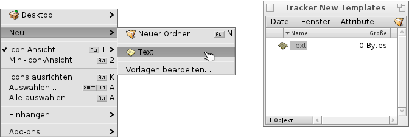Wählt man aus, öffnet sich der Ordner /boot/home/config/settings/Tracker/Tracker New Templates. Wird in diesem Verzeichnis eine Datei angelegt, wird diese - zusammen mit ihrem Dateityp und sämtlichen Attributen - als Vorlage im Menü angezeigt. In diesem Beispiel die Datei "Text" mit dem Dateityp text/plain. Näher wird darauf unter Dateitypen eingegangen.
- Ein Untermenü mit allen Anwendungen, die diese Datei - besser: diesen Dateityp - öffen können.
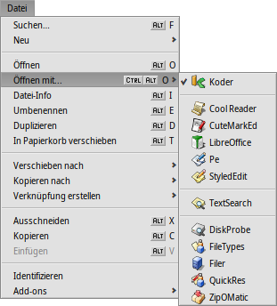Die Anwendung, die diese Datei auch öffen würde, wenn man sie doppelt anklickt, ist mit einem Häckchen versehen. Desweiteren werden alle Programme gelistet, die diesen Dateityp öffnen können, hier wäre das text/plain. Danach werden die Anwendungen aufgelistet, die den "supertype" - hier wäre das text/* - öffnen. Ganz unten in der Liste sind alle die Programme, die jede Art von Dateityp öffnen können. Wenn man nicht auf eines der gelisteten Programme klickt, sondern auf den Eintrag direkt, dann öffnet sich folgendes Fenster:
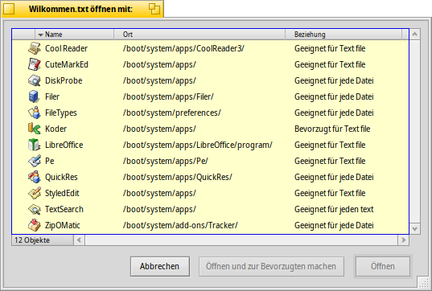Hier werden nochmals alle Programme aufgelistet, die bereits im Untermenü zu sehen waren, jedoch mit zusätzlichen Informationen. Wenn man ein Programm auswählt und auf klickt, kann man gleichzeitig die bevorzugte Anwendung für diesen Dateityp, hier text/plain setzen.
-
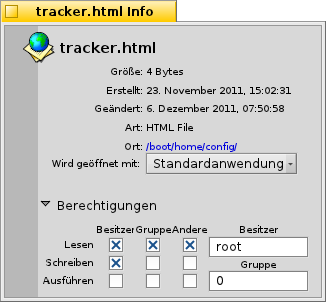In dem sich öffnenden Fenster werden Informationen zu der ausgewählten Datei angezeigt. Ein Klick auf den Dateipfad öffnet ein Tracker-Fenster. Es besteht hier auch die Möglichkeit, für diese Datei die bevorzugte Anwendung auszuwählen und - wenn das kleine Dreieck neben Berechtigungen geklickt wird - im Weiteren die Dateirechte und den Besitzer der Datei festlegen. (Hinweis: bis Haiku ein Mehr-Benutzer-System ist, "gehören" alle Dateien dem Benutzer "baron"; wer das ist, und warum ihm alle Dateien gehören, erschließt sich nach der Lektüre der "BeOS Bible" von Scott Hacker.)
, and - Hiermit wird der Dateiname geändert, die Datei wird dupliziert oder in den Papierkorb verschoben.
, and - Über die Navigation durch Untermenüs wird die Datei zum Ziel verschoben, kopiert oder dort ein Verweis zu der Datei erzeugt. Wenn man gleichzeitig SHIFT drück, kann man einen relativen Verweis anlegen.
, and - Die Datei wird mittels Zwischenablage ausgeschnitten, kopiert oder eingefügt. Wenn gleichzeitig SHIFT gedrückt wird, beim Aufrufen dieses Menüpunktes, können per mehrere Dateien in die Zwischenablage kopiert / ausgeschnitten werden; bei Drücken von SHIFT wird die Datei bei der entsprechenden Auswahl nicht eingefügt, sondern lediglich ein Verweis dazu.
- Hiermit wird der Dateityp einer Datei festgestellt. So wird beispielsweise einer mittels wget in das Dateisystem kopierten Datei nicht automatisch ein Dateityp zugeordnet. Hält man SHIFT beim Aufruf des Kontextmenüs, ändert sich dieser Eintrag zu , das den Dateityp erkennt und setzt, auch wenn schon eine Bezeichnung besteht.
- Öffnet ein Untermenü mit allen für diesen Dateityp zutreffenden Tracker Add-ons.
Informationen zu Dateioperationen
Wenn man eine Datei kopiert, verschiebt oder löscht, zeigt der Tracker einen Fortschrittsanzeiger an. Werden mehrere Dateioperationen vorgenommen, während andere noch laufen, bekommt jede einen eigenen Anzeiger.
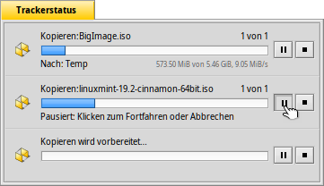Rechter Hand sind Schaltflächen zum Pausieren der Dateioperation oder zum Abbrechen dieser. Ein Pausieren kann dann sinnvoll sein, wenn man einen große Anzahl von Dateien bewegt und dadurch die Festplatte stark beschäftigt. Währenddessen sind alle weiteren Zugriffe auf die Festplatte zeitlich verzögert.